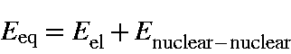

From the 0 K potential surface and using the harmonic oscillator approximation, we can calculate the vibrational frequencies, ni, of the normal modes of vibration. Using these, we can calculate vibrational, rotational and translational contributions to the thermodynamic quantities such as the partition function and heat capacity which arise from heating the system from 0 to T K.
Q: partition function, E: energy, S: entropy,
and C: Heat capacity at constant pressure = Cp. In ab initio
calculations, the heat capacity calculated is Cv.
The relationship between Cp and Cv (in cal.degree-1.mol-1) is: